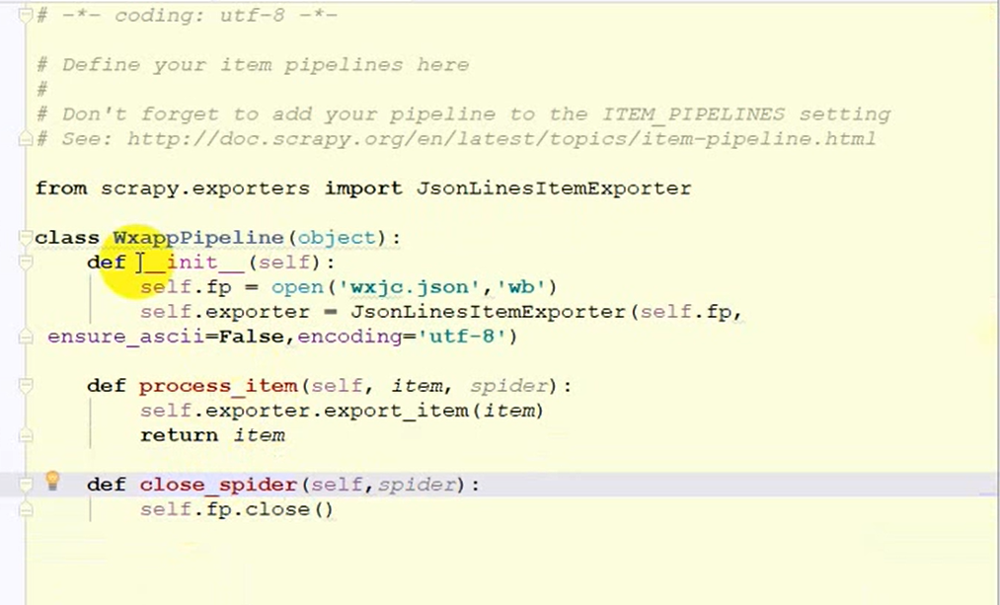
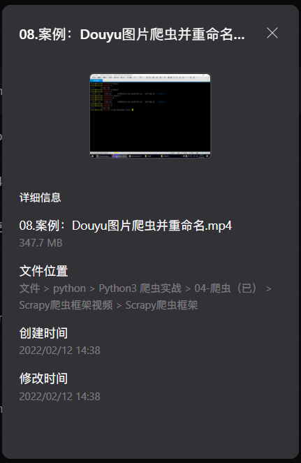

Scrapy框架

简单网页的爬取可以利用re模块，复杂网页的爬取对于内容的提取则会显得十分麻烦。Scrapy框架是python下的一个爬虫框架，因为它足够简单方便受到人们的青睐。
选择器（提取数据的机制）
Scrapy提取数据有自己的一套机制。 它们被称作选择器（seletors)，通过特定的XPath或者CSS表达式来“选择”HTML文件中的某个部分。XPath是一门用来在XML文件中选择节点的语言， 也可以用在HTML上。 CSS是一门将HTML文档样式化的语言。 选择器由它定义，并与特定的HTML元素的样式相关联。
Scrapy的选择器构建于lxml库之上， 这意味着它们在速度和解析准确性上非常相似， 所以看你喜欢哪种选择器就使用哪种吧， 它们从效率上看完全没有区别。
XPath选择器
XPath是一门在XML文档中查找信息的语言。 如果实在不想自己写的话可以借助edge浏览器的插件SelectorGadget 给自动生成一下
在XPath中， 有7种类型的节点： 元素、 属性、 文本、 命名空间、 处理指令、 注释以及文档节点（或称为根节点） 。 XML文档是被作为节点树来对待的。 树的根被称为文档节点或者根节点。
下面以一个简单的xml文件进行说明
<superhero>
<class>
<name lang="en">Tony Stark </name>
<alias>Iron Man </alias>
<sex>male </sex>
<birthday>1969 </birthday>
<age>47 </age>
</class>
<class>
<name lang="en">Peter Benjamin Parker </name>
<alias>Spider Man </alias>
<sex>male </sex>
<birthday>unknow </birthday>
<age>unknown </age>
</class>
<class>
<name lang="en">Steven Rogers </name>
<alias>Captain America </alias>
<sex>male </sex>
<birthday>19200704 </birthday>
<age>96 </age>
</class>
</superhero>
在这个例子中
| nodeName | 提取节点的所有子节点 |
|---|---|
| / | 从根节点选取 |
| //+节点名称 | 从匹配选择的当前节点选择文档中的节点，不考虑他们的位置 |
| . | 选取当前节点 |
| .. | 选取当前节点的父节点 |
| @+属性名称 | 选择属性 |
| * | 匹配任何元素节点 |
| @* | 匹配任何属性节点 |
| Node() | 匹配任何类型的节点 |
| /text（） | 节点的文本内容提取 |
| @href | 节点href属性的值 |
实际运用：
- “//div[@id=”images”]/a/text()”，节点名称为div属性为images的a节点的文本内容
import os
from scrapy.selector import Selector as se
mypath=os.getcwd()+"/爬虫/code/crawler_script/superHero.xml"
with open(mypath) as fp:
body=fp.read()
#print(body)
#print(se(text=body).xpath('/*').extract())
#采集第一个class
print(se(text=body).xpath('/html/body/superhero/class[1]').extract())
#采集name属性为en的数据
print(se(text=body).xpath('//name[@lang="en"]').extract())Response（Using selectors）
定义在Spider.py中的parse（）方法是[TextResponse](https://docs.scrapy.org/en/latest/topics/request-response.html#scrapy.http.TextResponse)类的一个实例，用来处理每次发起的网页请求传回来的响应文件，可以在这里定义对响应文件的提取规则等内容（请求的回调方法）。其输入的参数response其实就是网页请求的响应文件，本身可以作为选择器使用。
response.selector("")
其中selector表示具体的选择器，如xpath，css，re等
需要注意的是，使用response.xpath()方法的返回值仍然是一个选择器，也就是说可以继续对提取结果进行进一步的筛选，比如可以对筛选出来的文本继续用re模块进行匹配：
response.xpath().re()
sel.xpath("string(//a[1])").getall() # convert it to string欲将提取结果进行显示，可以借助
extract()或者get()函数，默认情况下对于没有数据可以被提取出来时输出None，可以通过给default参数赋其他值来调节：
get()返回一条结果getall()：返回所有结果extract():返回所有结果extract_first：返回第一个结果
调用getall返回的是一个列表，当爬取的数据不存在时，对列表的索引会导致程序出现IndexError停止，言外之意是不要随意对返回列表进行索引：
这种情况可以考虑用get（）代替，在有数据时会返回一样的结果，没有的话也只是会返回None
Spider
Scrapy中有一个Spider类，该类并没有提供什么特殊的功能。首先通过初始化的request(start_requests())去爬取指定的初始链接(start_urls），然后制定一个回调函数（callback ）来处理从网页请求中下载的回应（response）。 在制作自己需要的爬虫规则时，必须先继承Spider类。
类的属性：
- name：自己定义的spider的名字
- allowed_domains：包含了spider允许爬取的域名(domain)列表(list)
- start_urls：URL列表。当没有制定特定的URL时，spider将从该列表中开始进行爬取。 因此，第一个被获取到的页面的URL将是该列表之一。 后续的URL将会从获取到的数据中提取。
- custom_settings:对项目的设置文件进行重写，它必须定义为类属性，因为设置在实例化之前更新。
提取爬取结果
当我们对爬虫的结果进行返回时，默认返回一个字典形式的数据。为了让Scrapy也实现这样的效果，我们可以借助yield来实现：
import scrapy
class QuotesSpider(scrapy.Spider):
name = "quotes"
start_urls = [
'https://quotes.toscrape.com/page/1/',
'https://quotes.toscrape.com/page/2/',
]
def parse(self, response):
for quote in response.css('div.quote'):
yield {
'text': quote.css('span.text::text').get(),
'author': quote.css('small.author::text').get(),
'tags': quote.css('div.tags a.tag::text').getall(),
}爬取正常时显示的结果(日志中)：
2016-09-19 18:57:19 [scrapy.core.scraper] DEBUG: Scraped from <200 https://quotes.toscrape.com/page/1/>
{'tags': ['life', 'love'], 'author': 'André Gide', 'text': '“It is better to be hated for what you are than to be loved for what you are not.”'}
2016-09-19 18:57:19 [scrapy.core.scraper] DEBUG: Scraped from <200 https://quotes.toscrape.com/page/1/>
{'tags': ['edison', 'failure', 'inspirational', 'paraphrased'], 'author': 'Thomas A. Edison', 'text': "“I have not failed. I've just found 10,000 ways that won't work.”"}保存爬取结果
最简单的导出爬取结果的方法为:
scrapy crawl quotes -O quotes.json“quotes.json”限定了保存文件的格式与名称。也可以导出为csv格式或者JSON Lines格式（jl）
csv文件存储的一个好处是能把一个节点所有的文字变成一句话，如果是json格式，保存的会是一个字符串列表。
如果想要保存在数据库等操作，需要借助pipelines文件
增加参数
可以在命令进行操作给Spider类添加任何需要的参数：
scrapy crawl myspider -a category=electronics意思即为添加一个值为electronics的属性category
跟踪链接（多个网页的跳转抓取）
对于有多个相关联的网页内容的抓取，我们可以通过定义parse方法的内容实现。首先利用匹配原则提取出网页跳转的链接，然后再借助response的urljoin方法将待抓取的链接构建一个完整的链接，最后再调用yield来发出一个请求，然后Scrapy会安排送入的网页（next_page）进行访问请求，并在请求结束后利用定义的回调方法（self.parse）执行回调。
import scrapy
class QuotesSpider(scrapy.Spider):
name = "quotes"
start_urls = [
'https://quotes.toscrape.com/page/1/',
]
def parse(self, response):
for quote in response.css('div.quote'):
yield {
'text': quote.css('span.text::text').get(),
'author': quote.css('small.author::text').get(),
'tags': quote.css('div.tags a.tag::text').getall(),
}
next_page = response.css('li.next a::attr(href)').get()
if next_page is not None:
next_page = response.urljoin(next_page)
yield scrapy.Request(next_page, callback=self.parse)
#一个更加方便的方法
#if next_page is not None:
#yield response.follow(next_page, callback=self.parse)
#follow只返回了网页请求，仍需要进行回调与urljoin+Request的方法相比,response.follow提供了一种更加便捷的方法。该方法可以自动对selector类型进行处理（自动提取出节点中的链接）：
next_page = response.css('li.next a::attr(href)').get()
if next_page is not None:
yield response.follow(next_page, callback=self.parse)另外如果当所有的网页链接可以从一个迭代对象中爬取时，response.follow_all()方法提供了更为便捷的方法。
anchors = response.css('ul.pager a')
yield from response.follow_all(anchors, callback=self.parse)example
import scrapy
class AuthorSpider(scrapy.Spider):
name = 'author'
start_urls = ['https://quotes.toscrape.com/']
def parse(self, response):
author_page_links = response.css('.author + a')
yield from response.follow_all(author_page_links, self.parse_author)
pagination_links = response.css('li.next a')
yield from response.follow_all(pagination_links, self.parse)
def parse_author(self, response):
def extract_with_css(query):
return response.css(query).get(default='').strip()
yield {
'name': extract_with_css('h3.author-title::text'),
'birthdate': extract_with_css('.author-born-date::text'),
'bio': extract_with_css('.author-description::text'),
}#最好的书写是将在items文件中声明好格式，不建议这样写默认情况下，Scrapy 会过滤掉对已经访问过的 URL 的重复请求，避免由于编程错误而过多地访问服务器的问题。这可以通过设置 DUPEFILTER_CLASS 进行配置。
这是一个避免从多个页面
动态网页
动态网页的爬取意味着我们可能需要对headers和cookies进行调整。具体参考：
网页抓取教程
生成来自多个页面数据组成的item
using a trick to pass additional data to the callbacks.
通用爬虫
Scrapy除了提供Spider类之外，还提供了其他的类来简化我们的工作（对一些稍微有针对性一点的功能进行了封装）
class scrapy.spiders.CrawlSpider
创建：
Scrapy genspider -t crawl [爬虫名字] [域名]CrawSpider类的爬虫被广泛应用于爬取各类常规网站。它通过定义一组规则为跟踪链接提供了更加便捷的方法。与Spider类相比，该类新增加了两个属性：
- rules：包含一系列
Rule类，每一个Rule类定义了爬取网站的原则（是否跟踪，是否对输入的链接进行爬取） parse_start_url(_response_, _**kwargs_)：可以进行重写的方法
import scrapy from scrapy.spiders import CrawlSpider, Rule from scrapy.linkextractors import LinkExtractor class MySpider(CrawlSpider): name = 'example.com' allowed_domains = ['example.com'] start_urls = ['http://www.example.com'] rules = ( # Extract links matching 'category.php' (but not matching 'subsection.php') # and follow links from them (since no callback means follow=True by default). Rule(LinkExtractor(allow=('category\.php', ), deny=('subsection\.php', ))), # Extract links matching 'item.php' and parse them with the spider's method parse_item Rule(LinkExtractor(allow=('item\.php', )), callback='parse_item'), ) def parse_item(self, response): self.logger.info('Hi, this is an item page! %s', response.url) item = scrapy.Item() item['id'] = response.xpath('//td[@id="item_id"]/text()').re(r'ID: (\d+)') item['name'] = response.xpath('//td[@id="item_name"]/text()').get() item['description'] = response.xpath('//td[@id="item_description"]/text()').get() item['link_text'] = response.meta['link_text'] url = response.xpath('//td[@id="additional_data"]/@href').get() return response.follow(url, self.parse_additional_page, cb_kwargs=dict(item=item)) def parse_additional_page(self, response, item): item['additional_data'] = response.xpath('//p[@id="additional_data"]/text()').get() return itemLink_extractor类主要帮助我们对我们需要的url进行一个筛选（通常利用正则表达式指定筛选原则）常用的两个属性为：allow：正则表达式，表示需要进行提取的url
- deny：禁止的url
- allow_domains:
- deny_domains:
Rule类的主要属性有：
- link_extractor：
Link_extractor的一个实例。对网页进行筛选 - callback：用来规定使用的回调函数
- follow：布尔值，用来规定是否跟踪网页
process_links:从link_extractor传递给这个函数，用来规定不需要爬取的链接
item pipelines
理论上来讲，对网页抓取的数据可以选择放在parse函数中继续处理，但这种方法会牺牲网页抓取的速度，因此我们通常选择用parse函数做一个网页数据抓取，网页数据的处理和写入则放在交给pipelines
该类主要给了四个方法的定义。process_item(self, item, spider)item指返回的Item（类），spider指定义的spideropen_spider(self, spider)通过该方法在爬虫开始时进行调整close_spider(self, spider)在爬虫结束时进行相关操作from_crawler(cls, crawler)：类方法，用来获取Scrapy的配置信息
该函数会在网页数据抓取后自动进行，为了保证它的运行，一定要记得网页数据提取时要有返回值（yield或者return）。
Some examples
from itemadapter import ItemAdapter
from scrapy.exceptions import DropItem
class PricePipeline:
vat_factor = 1.15
def process_item(self, item, spider):
adapter = ItemAdapter(item)
if adapter.get('price'):
if adapter.get('price_excludes_vat'):
adapter['price'] = adapter['price'] * self.vat_factor
return item#记得及时返回pipeline
else:
raise DropItem(f"Missing price in {item}")import pymongo
from itemadapter import ItemAdapter
class MongoPipeline:
collection_name = 'scrapy_items'
def __init__(self, mongo_uri, mongo_db):
self.mongo_uri = mongo_uri
self.mongo_db = mongo_db
@classmethod
def from_crawler(cls, crawler):
return cls(
mongo_uri=crawler.settings.get('MONGO_URI'),
mongo_db=crawler.settings.get('MONGO_DATABASE', 'items')
)
def open_spider(self, spider):
self.client = pymongo.MongoClient(self.mongo_uri)
self.db = self.client[self.mongo_db]
def close_spider(self, spider):
self.client.close()
def process_item(self, item, spider):
self.db[self.collection_name].insert_one(ItemAdapter(item).asdict())
return item写入json文件：

图片爬取
如果需要下载页面的内的图片，pipelines提供了一种专门的类Imagepipeline来进行处理，具体处理操作可以查看对应的源代码
（阿里云盘）
调用
设置文件中默认是不使用pipeline文件的，我们需要将settings文件中对应位置取消注释，将自己设定的类添加到设置文件（settings.py）中，然后设定一个优先级（范围是0~1000，数字越小，优先级越高）
ITEM_PIPELINES = {
'myproject.pipelines.PricePipeline': 300,
'myproject.pipelines.JsonWriterPipeline': 800,
}将提取的数据传给pipeline处理有两种方法，一种是使用
yield来返回，第二种是收集所有的数据，用return items 来返回。
Downloader Middleware（全局改写requests/response）
对请求和返回进行修改，还可以处理异常情况（对response进行处理）.
Scrapy日志管理
终端输出命令的选择
Scrapy 用的是标准日志等级制度，如下所示（级别越来越低）：
- CRITICAL（关键）
- ERROR（错误）
- WARNING（警告）
- DEBUG（调试）
- INFO（信息）
要调整显示层级，只需在setting文件输入：LOG_LEVEL = 'ERROR'
这样只会有CRITICAL和ERROR显示出来
输出单独的日志文件
scrapy crawl articles -s LOG_FILE=wiki.log